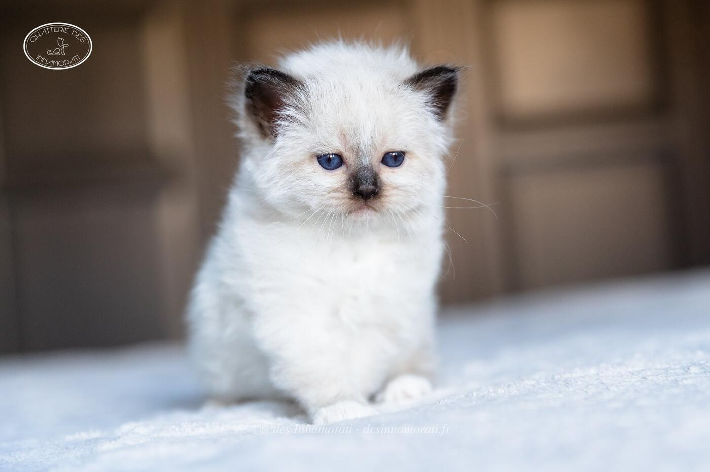

RobeFemelle · Seal point
Naissance8 avril 2019
TitresGIP
StatutRetraitée, stérilisée, vit à la maison
Album3 photos, de mai 2019 à avril 2020


Palmarès
14 expositions · 25 jugements · 12 Best in Show2026
- Mediterranean Winner Show BordeauxCAGPIB · BIV · NOM
2024
- SurgèresCAGPIB · NOM · BIS
- SurgèresCAGPIB · NOM · BIS
- Ancenis Saint GéréonCAGPIB · NOM · BIS
- Ancenis Saint GéréonCAGPIB · NOM · BIS
- Paris VersaillesCAGPIB · NOM · BIS
- Paris VersaillesCAGPIB · NOM · BIS
- Paris VersaillesCAGPIB · NOM · BIS
- Le Taillan BordeauxCAGPIB · NOM · BIS
- Le Taillan BordeauxCAPIB · NOM · BIS
2023
- Saint JamesCAPIB · NOM
- Saint JamesCAPIB
- StrasbourgCAPIB · NOM
- Vaux sur MerCAPIB · NOM
- Vaux sur MerCAP · NOM · BIS
- ParisCAP · NOM · BIS · BEST
- ParisCAP · NOM · BIS
2019
- BiarritzEXC1
- BiarritzEXC1 · NOM
- MarsacEXC1
- MarsacEXC1
- ParisEXC1
- ParisEXC3
- CastetsEXC1 · BIV
- CastetsEXC2
EXC Excellent (classement) · CAC, CACIB, CAGCIB, CACS certificats de champion, champion international, grand champion international et suprême · CAP, CAPIB, CAGPIB, CAPS équivalents pour les chats stérilisés · BIV meilleur de la variété · NOM nommé pour le Best in Show · BIS Best in Show · BOB Best of Best, le meilleur de toute l’exposition
Photos réduites et marquées. Elles appartiennent à la Chatterie des Innamorati et ne peuvent pas être reprises dans une annonce.